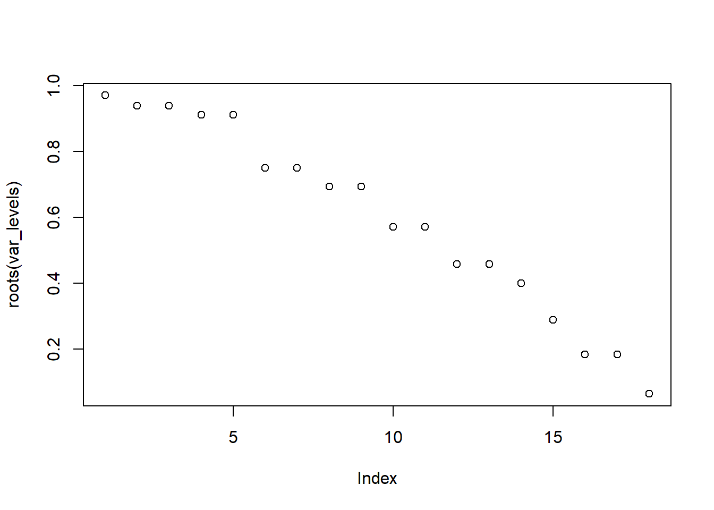

La estimación estructural tiene múltiples limitaciones.
El uso de modelos parsimoniosos tiene un costo, podemos caer el modelos sub-parametrizados, es decir podemos estimar modelos sesgados e inconsistentes. (Condiciones fundamentales en econometría).
La exogeneidad estricta es un supuesto muy restrictivo en un modelo multiecuacional.
Los modelos VAR son modelos estadísticos.
El poner restricciones al modelo (Matrices o condiciones- nos ayudarían a transformarlo en un modelo estructural SVAR.
Los modelos de Equilibrio general son modelos estructurales | Estos modelos me permiten modelar situaciones como la pandemia COVID-19.
Permiten modelar situaciones sobre las cuales no tenemos historia, es decir una estructura consistente.
En el Modelo VAR no nos interesan los coeficientes. Hay que recordar que todas las variables son endógenas, es decir estan conectados
1.1 1.2.Modelo VAR(p)
Un modelo autorregresivo vectorial de orden ( p ), denotado como ( VAR(p) ), se define de la siguiente forma:
\(X_t\) es un vector de variables endógenas de dimensión \(K \times 1\).
\(c\) es un vector de constantes de dimensión \(K \times 1\).
\(A_i\) son las matrices de coeficientes de dimensión \(K \times K\) para cada rezago \(i = 1, 2, \dots, p\).
\(\varepsilon_t\) son los términos de error o innovaciones, con media cero y matriz de covarianza:
\(\Sigma_u = E[\varepsilon_t \varepsilon_t']\)
donde \(\Sigma_u\) es simétrica y definida positiva.
En forma compacta, el modelo VAR(p) capta la interdependencia dinámica entre las variables endógenas en el tiempo.
1.2 1.3. Propiedades Básicas
Endogeneidad total: todas las variables son explicadas por sus propios rezagos y los de las demás.
Identificación reducida: los residuos \(εt\) pueden estar correlacionados, lo que impide inferencias estructurales.
Necesidad de estacionariedad: Las series deben ser integradas de orden 0 o cointegradas (en cuyo caso se usa VECM).
Hay que recordar que al ser integradas I (1) significa que tienen raíz unitaria y son procesos no estacionarios. Si queremos trabajar en modelos multiecuacionales debemos quitar esta raíz unitaria; por eso mencionamos que necesitamos que estas series sean procesos estacionarios.
Es decir que su media y varianza esten mas o menos alrededor de cero y constantes en el tiempo.
1.3 1.4. Proceso de estimación
Cada ecuación del VAR se estima por Mínimos Cuadrados Ordinarios (OLS), dado que los regresores son idénticos entre ecuaciones y se espera que el sistema no presente endogeneidad contemporánea.
El VAR describe la dinámica conjunta de las series y permite análisis como:
impulso-respuesta (IRF)- Una aproximación estructural
descomposición de varianza (FEVD),
pronósticos conjuntos.
1.4 1.5. El problema de identificación
Un VAR reducido no permite identificar los efectos contemporáneos ni distinguir causalidad estructural.
1.5 1.6. Identificación en un modelo VAR estructural
Un VAR con ( n ) variables contiene:
\(2n^2\)
parámetros en las matrices ( A ) y ( B ).
La matriz de covarianza de los errores, denotada como \(\Sigma_u\), solo aporta:
\(\frac{n(n + 1)}{2}\)
ecuaciones independientes.
Por lo tanto, para lograr la identificación del modelo, se requieren al menos:
\(\frac{n(n - 1)}{2}\)
restricciones adicionales, que generalmente se imponen sobre las matrices ( A ) o ( B ) (dependiendo del tipo de identificación: contemporánea, de largo plazo, o basada en restricciones de signo).
En un modelo VAR estructural (SVAR), el objetivo es recuperar las relaciones estructurales contemporáneas entre las variables, es decir, cómo los choques estructurales (innovaciones puras) afectan simultáneamente a las variables del sistema.
Sin embargo, el modelo estimado directamente (el VAR reducido) solo nos proporciona información sobre la covarianza observada de los errores, \(\Sigma_u\).
Esta matriz tiene \(n(n + 1)/2\) elementos únicos, ya que es simétrica.
El problema surge porque las matrices ( A ) y ( B ) contienen en total ( 2n^2 ) parámetros desconocidos, mientras que solo contamos con \(n(n + 1)/2\) ecuaciones provenientes de \(Sigma_u\).
Esto implica que el sistema está subidentificado: hay más parámetros desconocidos que ecuaciones disponibles.
Para resolver este problema, se deben imponer restricciones adicionales que permitan identificar cada parámetro estructural.
En concreto, se necesitan al menos:
\(\frac{n(n - 1)}{2}\)
restricciones adicionales para que el número de ecuaciones iguale al número de parámetros y el sistema quede justamente identificado.
1.5.1 🧩 Tipos de restricciones comunes
Restricciones contemporáneas (modelo tipo AB o recursivo - Cholesky):
Se impone una estructura triangular en ( A ) o ( B ) asumiendo que ciertas variables no responden contemporáneamente a otras.
Restricciones de largo plazo (modelo tipo Blanchard-Quah):
Se imponen condiciones sobre la respuesta acumulada a los choques, por ejemplo, que ciertos choques no afectan permanentemente algunas variables.
Restricciones de signo (modelo de Uhlig):
En lugar de ceros, se imponen signos (+/–) sobre las respuestas o sobre los impactos contemporáneos.
1.5.2 🧠 Ejemplo ilustrativo
Para un VAR de 2 variables (n = 2):
Parámetros totales: \(2n^2 = 8\)
Ecuaciones de la covarianza: \(n(n + 1)/2 = 3\)
Restricciones necesarias: \(n(n - 1)/2 = 1\)
Por tanto, se necesita al menos una restricción adicional (por ejemplo, asumir que una variable no reacciona contemporáneamente a otra) para lograr la identificación.
💡 Conclusión:
La identificación en los modelos VAR estructurales es esencial para poder interpretar los choques estimados como “causales” o “estructurales”.
Sin restricciones suficientes, solo observamos correlaciones reducidas, no relaciones estructurales.
1.6 Funciones impulso respuesta
En síntesis queremos analizar como un shock exogeno afecta a un shock contemporaneo en el momento
Eigen valores
Necesitamos que los eigen valores esten dentro del circulo unitario.
Tratamos de modelar relaciones aditivas, es decir que conforme me alejo en el tiempo del shock idiosincrático este se va perdiendo en el tiempo.
1.7Modelos parsimoniosos
En modelos de series temporales es fundamental estimar modelos parsimoniosos, es decir que sean modelos sencillos, el estimar modelos multiecuaciones requiere tener un poder computacional grande.
El número de rezagos es determinante
El número de coeficientes de la estimación de un modelo VAR en este sistema se incrementa considerablemente por rezagos a incluir.
Es fundamental guiarnos en los criterios de información: AIC | BIC | Hannan-Quinn para estimar una especificación óptima.
min (AIC, BIC)
1.8 Ejemplo aplicado: Modelo VAR con tres variables macroeconómicas
1.8.1 🔹 1. Variables del sistema
Supón que queremos estudiar la relación dinámica entre:
( Y_t ): PIB real trimestral (crecimiento económico)
( X_t ): Inflación trimestral (IPC)
( Z_t ): Tasa de interés de política monetaria
Nuestro interés es analizar cómo los choques en la tasa de interés afectan la inflación y el crecimiento, y viceversa.
Se reducen los grados de libertad si la muestra es corta.
Crece el riesgo de sobreajuste (el modelo se adapta a los datos históricos pero pierde capacidad predictiva).
Aumenta la complejidad analítica (impulso-respuesta, descomposición de varianza, estabilidad, etc.).
1.8.7 ✅ Conclusión
El modelo VAR permite capturar la interdependencia dinámica entre variables macroeconómicas, pero su uso requiere un equilibrio entre complejidad y parsimonia, especialmente cuando la muestra es limitada o el número de variables es grande.
1.9Test importantes.
Test de Engel y Granger
Estima una regresión; estima los residuos de la regresión; especifica que esos residuos son estacionarios, esto mediante los test de Dickey- Fuller.
Test de Johansen (1988)
Versión generalizada de los test de Engel y Granger, pero de forma Vectorial Multivariada.
Evalua raíz unitaria en vectores ( Sistema de vectores autoregresivos)
Consideraciones de aplicarlo en un modelo multivariado
Es posible que tenamos varios vectores de cointegración y exista más de un vector de cointegración.
Qué es cointegración
Puede que un sistema de ecuaciones de series de tiempo por separado sean no estacionarias, puede existir una combinación lineal de ellas que sí sea estacionaria.
Es relevante?
Si tenemos dos variables \(Y\) y \(X\) , llamese el PIB real y el Consumo Privado , en la práctica, tienden a crecer juntos .
Por lo general, estos son \(I(1)\) pero su diferencia puede ser estacionaria
\(Consumo - PIB\) pueden ser \(I(0)\)
Es decir indicar una relación estable en el largo plazo.
1.10Implicaciones del Modelo VAR
Cuando las variables estan cointegradas:
No se debe estimar un VAR en diferencias, porque se pierde la información del equilibrio de largo plazo.
Tampoco un VAR sin restricciones.
Solución: Estimar un modelo VECM (Modelo de corrección de Errores) - Es decir;
Dinámica de corto plazo
Relación a largo plazo ( Cointegración)
👉 Si las series son I(0) → usamos VAR en niveles.
👉 Si las series son I(1) y no cointegradas → usamos VAR en diferencias.
👉 Si las series son I(1) y cointegradas → usamos VECM.
Ejemplo empíco
Series a modelar
Identificación económica que usaré (ajústala si quieres):
Petróleo (L_PP) es “exógeno contemporáneo”: no recibe shocks contemporáneos de otras variables (solo su propio shock).
PIB (L_PIB) puede reaccionar contemporáneamente a petróleo.
Gasto total (L_GG) reacciona contemporáneamente al PIB (reglas/prociclicidad).
Gasto corriente / de capital (L_GC, L_GK) reaccionan a G_G.
Ingresos (L_IF) reaccionan a petróleo (vía actividad/sector petrolero) y a impuestos indirectos (L_IVA, L_IR, L_ICE).
Para el resto, dejamos parámetros “libres” (NA) solo donde tiene sentido; el resto se fijan en 0.
H₀ (nula): La serie tiene una raíz unitaria → no estacionaria.
H₁ (alternativa): La serie es estacionaria.
1.12 📊 2️⃣ Resultados por niveles
Variable
p-valor
Interpretación
L_PP
0.5077
No se rechaza H₀ → no estacionaria
L_PIB
0.4831
No estacionaria
L_GG
0.1429
No estacionaria
L_GC
0.2622
No estacionaria
L_GK
0.8133
No estacionaria
L_IF
0.3314
No estacionaria
L_IVA
0.1580
No estacionaria
L_ICE
0.6756
No estacionaria
L_IR
0.1775
No estacionaria
🔹 Conclusión en niveles:
Todas las variables tienen p-valores > 0.05 → no se rechaza la hipótesis nula de raíz unitaria.
➡️ Ninguna serie es estacionaria en niveles.
1.13 📈 3️⃣ Resultados en primeras diferencias
Variable
p-valor
Interpretación
L_PP
0.0302
Estacionaria
L_PIB
0.0100
Estacionaria
L_GG
0.0100
Estacionaria
L_GC
0.0162
Estacionaria
L_GK
0.1010
No estacionaria al 5% (pero casi)
L_IF
0.1381
No estacionaria
L_IVA
0.1824
No estacionaria
L_ICE
0.0965
No estacionaria (marginal al 10%)
L_IR
0.0104
Estacionaria
🔹 Conclusión en diferencias:
La mayoría de las series
(L_PP, L_PIB, L_GG, L_GC, L_IR)
Son estacionarias en primeras diferencias (p < 0.05).
Algunas (L_GK, L_IF, L_IVA, L_ICE) presentan p-valores entre 0.09–0.18, lo que podría considerarse estacionarias al 10% o requerir una segunda diferencia o un ajuste de rezagos.
1.144️⃣ Implicación para el modelo VAR
Dado que las series no son estacionarias en niveles pero sí lo son en diferencias, se clasifican como I(1) (integradas de orden uno).
Esto sugiere que podría existir cointegración entre ellas, por lo cual el paso siguiente sería aplicar el test de Johansen:
Seleccionamos los rezagos en niveles (para el Test de Johansen)
El test trace contrasta la hipótesis nula de que existen como máximo r vectores de cointegración frente a la alternativa de que hay más.
El resultado fue:
Hipótesis nula
Estadístico
Valor crítico (5%)
Decisión
r = 0
220.68
202.92
Rechazar H₀ → existe al menos 1 relación de cointegración
r ≤ 1
158.09
165.58
No se rechaza H₀
r ≤ 2
117.22
131.70
No se rechaza H₀
…
…
…
…
✅ Conclusión: se identifica una relación de cointegración entre las variables analizadas (L_PP, L_PIB, L_GG, L_GC, L_GK, L_IF, L_IVA, L_ICE, L_IR).
Esto implica que las series son integradas de orden uno (I(1)) y mantienen una relación de equilibrio a largo plazo.
1.15.2 2️⃣ Prueba del máximo eigenvalor (Eigenvalue Test)
El test maximum eigenvalue (λmax) contrasta r vectores frente a la alternativa de r+1.
El resultado fue:
Hipótesis nula
Estadístico
Valor crítico (5%)
Decisión
r = 0
62.58
57.42
Rechazar H₀
r ≤ 1
40.88
52.00
No se rechaza H₀
…
…
…
…
✅ Conclusión: también indica una sola relación de cointegración, coherente con el test trace.
1.15.3 3️⃣ Interpretación de los eigenvectores (β)
Los eigenvectores representan las relaciones de cointegración, es decir, las combinaciones lineales estacionarias entre las variables en niveles.
Por ejemplo, el primer vector (normalizado respecto a L_PP.l1) puede escribirse como:
🧩 Interpretación económica: - Un aumento del PIB (+0.73) está asociado con un incremento de los precios públicos (L_PP) en el largo plazo.
- Gasto de gobierno (L_GG) y consumo público (L_GC) tienen relación negativa, sugiriendo efectos de equilibrio fiscal o restricciones presupuestarias.
- El impuesto al valor agregado (L_IVA) y el impuesto a consumos especiales (L_ICE) tienen signo positivo, reflejando que mayores recaudaciones se asocian con mayores ingresos totales.
- La constante negativa (-21.36) representa el término de equilibrio de largo plazo.
1.15.4 4️⃣ Interpretación de los weights (α)
Los weights (o matriz de carga α) indican la velocidad de ajuste al equilibrio ante desviaciones de largo plazo.
Valores altos (en valor absoluto) implican una rápida corrección.
Por ejemplo: - L_PP.d tiene una carga de -0.17, indicando que los precios públicos se ajustan moderadamente hacia el equilibrio.
- L_GC.d con -0.20 sugiere que el gasto corriente responde más rápido a los desequilibrios.
- L_PIB.d y L_IVA.d presentan coeficientes pequeños, indicando menor sensibilidad o ajuste lento.
1.15.5 5️⃣ Conclusión general
El sistema presenta una relación de cointegración, lo que implica que las variables fiscales y macroeconómicas (PIB, gasto, impuestos) comparten un equilibrio de largo plazo.
Las desviaciones de corto plazo se corrigen gradualmente, especialmente a través de los ajustes en precios públicos y gasto corriente.
Resumen interpretativo
Elemento
Descripción
Conclusión
Test Trace
Evalúa número de relaciones de cointegración
1 vector cointegrante
Test Eigenvalue
Evalúa significancia marginal de cada raíz característica
1 vector cointegrante
Eigenvectors (β)
Relación de equilibrio entre las variables
Existe relación estable entre ingresos, gasto y PIB
Weights (α)
Velocidad de ajuste
Ajuste moderado en L_PP y L_GC
Conclusión económica
Equilibrio fiscal de largo plazo con desajustes transitorios
Rango de cointegración estimado (trace, 5%): r = 1
Esto significa que el test Johansen de traza encontró una sola relación de cointegración entre las variables (r = 1), al nivel de significancia del 5%.
Dado que el modelo tiene cointegración
Procedemos a estimar un modelo de Vectores cointegrados
Código
vecm_fit <-cajorls(j_tr, r = r)cat("\n--- Beta (vectores cointegrados estimados) ---\n")
Cuando \(ECT_t \neq 0\), significa que existe un desvío del equilibrio.
La fila constant = -21.3593 corresponde al intercepto de la relación de largo plazo, una constante restringida al espacio cointegrante, debido a la opción ecdet = "const" en la estimación del modelo.
El hecho de que $L_{PP,t-1} = 1 $ indica que β está normalizado sobre ( L_{PP} ), aunque podrías normalizar sobre otra variable si deseas interpretar las elasticidades de manera más conveniente.
1.16.2 🔹 ¿Cómo se usa el ECT en el VECM?
El modelo de corrección de errores (VECM) para cada variable en diferencias incluye el término:
\[
\alpha \cdot ECT_{t-1}
\]
donde \(\alpha\) representa los loadings o coeficientes de ajuste.
Estos coeficientes \(\alpha\) miden qué tan fuerte y en qué dirección cada variable corrige los desvíos del equilibrio de largo plazo.
Por ejemplo, en la ecuación de:
\[
\Delta L_{PP}
\]
si el coeficiente asociado a \(ECT_{t-1}\) es decir, su \(\alpha\) es negativo y estadísticamente significativo, implica que:
Cuando ( ECT_{t-1} > 0 ) (es decir, el precio está por encima del equilibrio),
entonces \(\Delta L_{PP}\) tenderá a ser negativo,
lo cual corrige el desvío y restablece el equilibrio.
1.16.3 ✅ En resumen
\(\beta\): define la relación de cointegración (equilibrio de largo plazo).
\(ECT_t\): mide el grado de desviación respecto a ese equilibrio.
\(\alpha\): indica la velocidad de ajuste de cada variable hacia el equilibrio.
1.17Diagnosticos
Código
cat("\n--- Portmanteau ---\n"); print(serial.test(var_from_vecm, lags.pt =12, type ="PT.asymptotic"))
--- Portmanteau ---
Portmanteau Test (asymptotic)
data: Residuals of VAR object var_from_vecm
Chi-squared = 854.21, df = 819, p-value = 0.191
$serial
Portmanteau Test (asymptotic)
data: Residuals of VAR object var_from_vecm
Chi-squared = 854.21, df = 819, p-value = 0.191
$JB
JB-Test (multivariate)
data: Residuals of VAR object var_from_vecm
Chi-squared = 12.03, df = 18, p-value = 0.8457
$Skewness
Skewness only (multivariate)
data: Residuals of VAR object var_from_vecm
Chi-squared = 7.3634, df = 9, p-value = 0.5993
$Kurtosis
Kurtosis only (multivariate)
data: Residuals of VAR object var_from_vecm
Chi-squared = 4.6671, df = 9, p-value = 0.8623
$jb.mul
$jb.mul$JB
JB-Test (multivariate)
data: Residuals of VAR object var_from_vecm
Chi-squared = 12.03, df = 18, p-value = 0.8457
$jb.mul$Skewness
Skewness only (multivariate)
data: Residuals of VAR object var_from_vecm
Chi-squared = 7.3634, df = 9, p-value = 0.5993
$jb.mul$Kurtosis
Kurtosis only (multivariate)
data: Residuals of VAR object var_from_vecm
Chi-squared = 4.6671, df = 9, p-value = 0.8623
1.18 🔹 Diagnósticos del modelo VAR / VECM
1.18.1 1️⃣. Portmanteau test → Autocorrelación serial
Hipótesis:
\[
\begin{aligned}
H_0 &: \text{No hay autocorrelación serial en los residuos.} \\
H_1 &: \text{Existe autocorrelación (dependencia entre errores rezagados).}
\end{aligned}
\]
Los residuos no presentan autocorrelación significativa.
✅ Esto indica que el modelo captura adecuadamente la dinámica temporal, es decir, los rezagos elegidos son suficientes.
Comentario para clase:
“El test Portmanteau verifica que los residuos del VAR no tengan correlación serial.
Si el p-valor es alto, el modelo está bien especificado en términos de dinámica temporal.”
1.18.2 2️⃣. ARCH test → Heterocedasticidad condicional
Hipótesis:
\[
\begin{aligned}
H_0 &: \text{No hay efectos ARCH (varianza constante en el tiempo).} \\
H_1 &: \text{Existe heterocedasticidad condicional (la varianza de los errores cambia con el tiempo).}
\end{aligned}
\]
No hay evidencia de efectos ARCH → la varianza de los residuos parece estable.
Comentario:
“El test ARCH comprueba si existe heterocedasticidad en los errores.
En este caso, los resultados muestran homocedasticidad, es decir, el modelo no presenta volatilidad cambiante.”
Los p-valores son muy altos, por lo tanto no se rechaza ( H_0 ).
Los residuos cumplen el supuesto de normalidad, tanto en simetría como en curtosis.
Comentario:
“La normalidad de los residuos es importante para la validez de los intervalos de confianza
y las pruebas de hipótesis en el VAR. En este caso, los residuos se distribuyen normalmente.”
1.18.4 🔹 ✅ Conclusión general
Test
Hipótesis nula
p-value
Decisión
Conclusión
Portmanteau
No autocorrelación
0.191
No se rechaza
Residuos no autocorrelados
ARCH
Homocedasticidad
1.000
No se rechaza
Varianza constante
Normalidad (JB)
Normalidad multivariada
0.8457
No se rechaza
Residuos normales
Conclusión:
Los resultados de las pruebas indican que el modelo VAR/VECM está bien especificado:
No hay autocorrelación serial.
Los errores son homocedásticos.
Los residuos siguen una distribución aproximadamente normal.
✅ Esto valida la consistencia de las inferencias, como los análisis de impulso–respuesta, descomposición de varianza y efectos de transmisión.
Estimación Estabilidad
Código
var_levels <-VAR(Y_ts, p = Kj, type ="const")mod_roots <-roots(var_levels, modulus =TRUE)cat("\nMódulos de autovalores (VAR en niveles, p=Kj):\n"); print(round(sort(mod_roots, decreasing =TRUE), 4))
plot(roots(var_levels)) # puntos dentro del círculo => estable

Son los autovalores (roots) de un modelo VAR en niveles, y su verificación de estabilidad, que es un paso fundamental antes de interpretar los resultados o generar funciones impulso–respuesta (IRF).
Calculas los autovalores del polinomio característico del VAR.
Los modos (módulos) de esos autovalores determinan la estabilidad del sistema dinámico
Un modelo VAR es estable (o estacionario en niveles) si todos los autovalores tienen módulo menor que 1.
Esto equivale a decir que las raíces del polinomio característico están fuera del círculo unitario (en el plano complejo).
Todos los valores son menores que 1, lo que implica:
✅ El VAR es estable
✅ El sistema es estacionario en niveles (no explosivo)
✅ Se pueden calcular funciones impulso–respuesta (IRF) y descomposición de varianza sin problemas.
1.19 VAR equivalente del VECM (para IRF/FEVD/forecast)
Esto es el VAR equivalente del VECM, ya que si tus series son I(1) y cointegradas (r=1), el VECM y el VAR(Δ) contienen la misma dinámica de corto plazo.
Calcula las diferencias primeras de cada serie
na.omit() elimina los valores perdidos de la primera observación.
🔹 Resultado: dy_ts contiene la versión estacionaria (en diferencias) de tu sistema multivariado.
La función irf() genera las respuestas impulso–respuesta (Impulse Response Functions) del modelo var_from_vecm, que proviene del VECM cointegrado.
Estas funciones permiten analizar cómo una perturbación (shock) en una variable afecta a las demás en el tiempo.
1.20.2 🔹 Parámetros principales
Argumento
Descripción
impulse = "L_PP"
Variable que recibe el shock exógeno (perturbación).
response = "L_PIB"
Variable cuya respuesta se observa.
n.ahead = 12
Horizonte temporal de 12 períodos (por ejemplo, trimestres o meses).
boot = TRUE
Activa el método bootstrap para obtener intervalos de confianza.
ci = 0.95
Establece un intervalo de confianza del 95%.
1.20.3 🔹 Resultado e interpretación
El gráfico que produce irf() muestra cómo un shock inesperado en ( L_{PP} ) (por ejemplo, precios o política pública) afecta al PIB (( L_{PIB} )) a lo largo de 12 períodos.
Eje X: Horizonte temporal (número de períodos).
Eje Y: Magnitud y signo de la respuesta de la variable dependiente.
Las bandas grises o líneas discontinuas representan los intervalos de confianza al 95%:
\[
\text{Si la banda incluye el cero} \Rightarrow \text{la respuesta no es estadísticamente significativa.}
\]
\[
\text{Si la banda se mantiene por encima o por debajo del cero} \Rightarrow \text{la respuesta sí es significativa.}
\]
1.20.4 🔹 📈 Ejemplo de interpretación
“Un aumento inesperado en ( L_{PP} ) genera un incremento transitorio en ( L_{PIB} ) durante los primeros 3 períodos, que luego se disipa gradualmente.”
# IRFs de petróleo hacia todas las respuestas (lote)responses <-c("L_PIB","L_GG","L_GC","L_GK","L_IF","L_IVA","L_ICE","L_IR")for (resp in responses) { f <-irf(svar_d, impulse ="L_PP", response = resp, n.ahead =12, boot =TRUE, ci =0.95) fn <-paste0("IRF_SVAR_DIFF_LPP_to_", resp, ".png")png(fn, width =1400, height =900, res =150)par(mar =c(4,4,2,1)); plot(f); dev.off()cat("✅ Guardado: ", fn, "\n", sep ="")}
✅ Guardado: IRF_SVAR_DIFF_LPP_to_L_PIB.png
✅ Guardado: IRF_SVAR_DIFF_LPP_to_L_GG.png
✅ Guardado: IRF_SVAR_DIFF_LPP_to_L_GC.png
✅ Guardado: IRF_SVAR_DIFF_LPP_to_L_GK.png
✅ Guardado: IRF_SVAR_DIFF_LPP_to_L_IF.png
✅ Guardado: IRF_SVAR_DIFF_LPP_to_L_IVA.png
✅ Guardado: IRF_SVAR_DIFF_LPP_to_L_ICE.png
✅ Guardado: IRF_SVAR_DIFF_LPP_to_L_IR.png
Código
cat("\n=== FIN: SVAR en diferencias (estacionario) con gráficos exportados ===\n")
=== FIN: SVAR en diferencias (estacionario) con gráficos exportados ===
Forecast
Código
# ===============================# FORECAST con VAR en diferencias# ===============================# Horizonte de pronóstico (trimestres)h <-8# 2 años# 1) Pronóstico de diferencias (Δlog) con el VAR estacionariofc_d <-predict(var_d, n.ahead = h, ci =0.95)# Extraer medias, límites inferior/superior por variablevnames_d <-colnames(var_d$y)dhat_mean <-sapply(vnames_d, function(v) fc_d$fcst[[v]][, "fcst"])dhat_low <-sapply(vnames_d, function(v) fc_d$fcst[[v]][, "lower"])dhat_high <-sapply(vnames_d, function(v) fc_d$fcst[[v]][, "upper"])# 2) Reconstruir niveles (logs) desde el último dato observadolast_level <-as.numeric(tail(Y_ts, 1)) # vector de 9 niveles (logs) en 2024Q4names(last_level) <-colnames(Y_ts)# Función auxiliar: acumula difs para pasar a nivelesrebuild_levels <-function(last_level, diffs_mat) {# diffs_mat: h x k (Δlog pronosticadas) lev <-matrix(NA_real_, nrow =nrow(diffs_mat), ncol =ncol(diffs_mat))colnames(lev) <-colnames(diffs_mat) prev <- last_levelfor (t in1:nrow(diffs_mat)) { lev[t, ] <- prev + diffs_mat[t, ] prev <- lev[t, ] } lev}# Niveles pronosticados (punto), y bandas aprox. por acumulación (didáctico)lev_hat_mean <-rebuild_levels(last_level, dhat_mean)lev_hat_low <-rebuild_levels(last_level, dhat_low)lev_hat_high <-rebuild_levels(last_level, dhat_high)# 3) Construir fechas futuras (trimestres posteriores a 2024Q4)# Reusamos la secuencia "fechas" que ya tienes (2007Q1..2024Q4) y la extendemosfechas_all <-as.yearqtr(seq(from =as.Date("2007-01-01"), by ="quarter", length.out = T + h))fechas_fc <-tail(fechas_all, h) # fechas pronóstico# 4) Armar data.frames para exportar a CSV# a) Pronóstico en diferenciasfc_diff_df <-data.frame(fecha_q = fechas_fc,as.data.frame(dhat_mean),check.names =FALSE)# b) Pronóstico en niveles (logs)fc_level_df <-data.frame(fecha_q = fechas_fc,as.data.frame(lev_hat_mean),check.names =FALSE)# 5) Exportar a CSV (carpeta de trabajo actual)write.csv(fc_diff_df, "forecast_VARdiff_deltas.csv", row.names =FALSE)write.csv(fc_level_df, "forecast_VARdiff_levels.csv", row.names =FALSE)cat("✅ CSV guardados: forecast_VARdiff_deltas.csv, forecast_VARdiff_levels.csv\n")